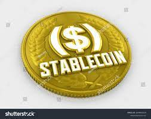

what is stablecoins?

Stablecoins are cryptocurrencies whose value is pegged, or tied, to that of another currency, commodity, or financial instrument. Stablecoins aim to provide an alternative to the high volatility of the most popular cryptocurrencies, including Bitcoin (BTC), which has made crypto investments less suitable for common transactions.
key takeaways
- Stablecoins are cryptocurrencies that attempt to peg their market value to some external reference.
- Stablecoins are more useful than more-volatile cryptocurrencies as a medium of exchange.
- Stablecoins may be pegged to a currency like the U.S. dollar or to the price of a commodity such as gold.
- Stablecoins continue to come under scrutiny by regulators, given the rapid growth of the $128 billion market and its potential to affect the broader financial system.1
CoinMarketCap. "Top Stablecoin Tokens by Market Capitalization."